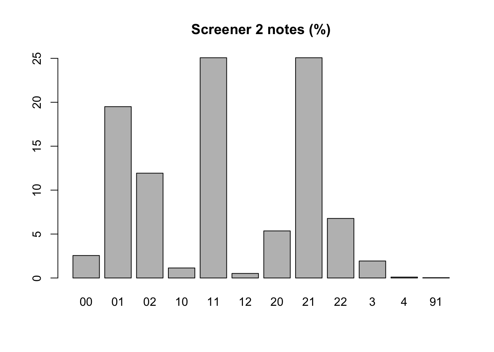

library(readr)
library(tidyverse)── Attaching packages ─────────────────────────────────────── tidyverse 1.3.2 ──
✔ ggplot2 3.4.0 ✔ dplyr 1.0.10
✔ tibble 3.1.8 ✔ stringr 1.5.0
✔ tidyr 1.2.1 ✔ forcats 0.5.2
✔ purrr 0.3.5
── Conflicts ────────────────────────────────────────── tidyverse_conflicts() ──
✖ dplyr::filter() masks stats::filter()
✖ dplyr::lag() masks stats::lag()library(openxlsx)
library(here)here() starts at /Users/franzprante/Nextcloud/project-vwl4makro/09_Forschung/Drittmittel/DZ2022/WP2_Meta_energy/search/CSV/Merging_labeled_and_unlabeled_dataset_for_Warm-Up_in_ASReview/After_abstract_screeninglibrary(revtools)
# Importing screener 1 data
s1_data <- read_csv(here("Screener_1_data/abstract-screening-morpep-energy-screener-1.csv"))Warning: One or more parsing issues, call `problems()` on your data frame for details,
e.g.:
dat <- vroom(...)
problems(dat)Rows: 22023 Columns: 92
── Column specification ────────────────────────────────────────────────────────
Delimiter: ","
chr (31): Key, ItemType, Author, title, PublicationTitle, ISSN, DOI, Url, a...
dbl (5): record_id, PublicationYear, included, labeling_order_1, Included_1
lgl (55): ISBN, NumPages, NumberOfVolumes, SeriesNumber, SeriesText, Series...
dttm (1): AccessDate
ℹ Use `spec()` to retrieve the full column specification for this data.
ℹ Specify the column types or set `show_col_types = FALSE` to quiet this message.# Importing screener 2 data
s2_data <- read_csv(here("Screener_2_data/abstract-screening-morpep-energy-screener-2.csv"))Warning: One or more parsing issues, call `problems()` on your data frame for details,
e.g.:
dat <- vroom(...)
problems(dat)Rows: 22023 Columns: 92
── Column specification ────────────────────────────────────────────────────────
Delimiter: ","
chr (31): Key, ItemType, Author, title, PublicationTitle, ISSN, DOI, Url, a...
dbl (5): record_id, PublicationYear, included, labeling_order_1, Included_1
lgl (55): ISBN, NumPages, NumberOfVolumes, SeriesNumber, SeriesText, Series...
dttm (1): AccessDate
ℹ Use `spec()` to retrieve the full column specification for this data.
ℹ Specify the column types or set `show_col_types = FALSE` to quiet this message.## Some consistency tests and corrections before merging
# Screener 1: only valid screener notes?
unique(s1_data$exported_notes_1) [1] NA "00" "11" "02" "22" "01" "3" "20" "21" "12" "10"paste("Screener 1 notes are valid.")[1] "Screener 1 notes are valid."# Screener 2: only valid screener notes?
unique(s2_data$exported_notes_1) [1] NA "20" "02" "21" "01" "11" "3" "00" "12" "22" "10" "4" "91"paste('For screener 2, there is one 91, which is supposed to be 01. But this would not change the exclusion of the study.')[1] "For screener 2, there is one 91, which is supposed to be 01. But this would not change the exclusion of the study."View(s2_data %>% filter(exported_notes_1=="91")) # Inspecting the entry.
paste(s2_data %>% filter(exported_notes_1=="91") %>% select(title, abstract)) # Inspecting title and abstract of the wrong entry.[1] "Estimating Price Elasticities of Supply for the US Natural Gas Market"
[2] "In order to supply internal energy needs, many countries depend on importing non-renewable energy resources such as petroleum, natural gas, and coal. Due to the high global energy dependency, it is significant to understand how the supply and demand of different fossil fuels respond to changes in price. This response is measured as elasticity and plays an important role not only for modelling supply and demand in a specific market but also in policy evaluation, planning and future trend analysis of the studied sector. The existing empirical literature in elasticities for the energy markets has concentrated mostly on the demand side. Dahl (2007) gathered more than 1.900 studies estimating elasticities of demand. On the supply side, elasticities studies have concentrated mostly on crude oil and its derivatives as well as the coal sector (see Dahl and Duggan, 1998 for a survey of elasticities of supply in the US energy sector). The limited available number of studies and the competitive structure of the North American natural gas market provides ample research potential. The United States is not only the largest consumer of natural gas, but - most relevant for the aim of our analysis - it is currently also the largest producer (BP, 2012)."paste("Exclusion is valid.")[1] "Exclusion is valid."# Do screener 1 notes correctly correspond to in-/exlclusion of studies?
s1_included_notes <- s1_data$exported_notes_1 %in% c("11", "12", "21", "22") # Index of entries that carry inclusion notes
sum(s1_data$Included_1[s1_included_notes] != 1) [1] 0paste("Valid! (0 implies that NO entry that carries an inclusion note is excluded)")[1] "Valid! (0 implies that NO entry that carries an inclusion note is excluded)"s1_excluded_notes <- s1_data$exported_notes_1 %in% c("00", "01", "02", "10", "20", "3", "4") # Index of entries that carry exclusion notes
sum(s1_data$Included_1[s1_excluded_notes] != 0) [1] 1paste("For screener 1, there is one entry that is included though it carries an exclusion note. But no correction necessary, as the entry will be excluded in the full text screening phase.")[1] "For screener 1, there is one entry that is included though it carries an exclusion note. But no correction necessary, as the entry will be excluded in the full text screening phase."View(s1_data %>% filter(Included_1 == 1 & exported_notes_1 %in% c("00", "01", "02", "10", "20", "3", "4"))) # Inspect the entry.
# Do screener 2 notes correctly correspond to in-/exclusion of studies?
s2_included_notes <- s2_data$exported_notes_1 %in% c("11", "12", "21", "22")
sum(s2_data$Included_1[s2_included_notes] != 1) [1] 1paste("For screener 2, there is one entry that was excluded though it carries an inclusion note. Correction not necessary because this mistake will only marginally affect the sample.")[1] "For screener 2, there is one entry that was excluded though it carries an inclusion note. Correction not necessary because this mistake will only marginally affect the sample."s2_excluded_notes <- s2_data$exported_notes_1 %in% c("00", "01", "02", "10", "20", "3", "4")
sum(s2_data$Included_1[s2_excluded_notes] != 0) [1] 2paste("There are 2 entries which were included though they carry exclusion notes. But no correction necessary, as these entries will be excluded in the full text screening phase.")[1] "There are 2 entries which were included though they carry exclusion notes. But no correction necessary, as these entries will be excluded in the full text screening phase."View(s2_data %>% filter(Included_1 == 1 & exported_notes_1 %in% c("00", "01", "02", "10", "20", "3", "4"))) # Inspecting the entries.
## Merging the data
# Test that record id and Key are matching for both s1_data and s2_data
all(s1_data[, c("record_id", "Key")] == s2_data[, c("record_id", "Key")]) # Alternative test: sum(paste0(s1_data$record_id,s1_data$Key) != paste0(s2_data$record_id,s2_data$Key))[1] TRUE# Merge s1_data and s2_data based on all variables that must have equal values, i.e. those that have not been created by ASReview
columns <- colnames(s1_data) # These are the column names of the dataframe (they are equal for s1_data and s2_data, see: 'sum(colnames(s1_data) != colnames(s2_data))')
matching_columns <- head(columns, -4) # These are the columns that have not been created by ASReview
merged_data <- merge(s1_data, s2_data, by = matching_columns, all = T, sort = F, suffixes = c(".s1",".s2")) # This merges the dataframes by all columns that must have equal values. Columns with separate values are retained.
# Test that merged data correctly matches original data
all(na.omit(merged_data[, c("record_id", "Key", "Included_1.s1", "exported_notes_1.s1")]) == na.omit(s1_data[, c("record_id", "Key", "Included_1", "exported_notes_1")])) # For screener 1, test that record_id, Key, Included_1 and exported_notes_1 in the merged data matches the original entries[1] TRUEall(na.omit(merged_data[, c("record_id", "Key", "Included_1.s2", "exported_notes_1.s2")]) == na.omit(s2_data[, c("record_id", "Key", "Included_1", "exported_notes_1")])) # For screener 1, test that record_id, Key, Included_1 and exported_notes_1 in the merged data matches the original entries[1] TRUE# Analyses of screening
s1_s2_agreement_data <- merged_data %>%
slice_tail(n = 21803) %>% # Excluding the prior sample
select(Key, Included_1.s1, Included_1.s2, exported_notes_1.s1, exported_notes_1.s2) %>%
filter(!is.na(Included_1.s1) | !is.na(Included_1.s2))
paste(nrow(s1_s2_agreement_data), "entries were screened by either screener 1 or 2.", sum(s1_s2_agreement_data$Included_1.s1, na.rm = T), "were included by screener 1.", sum(s1_s2_agreement_data$Included_1.s2, na.rm = T), "were included by screener 2") [1] "3303 entries were screened by either screener 1 or 2. 1480 were included by screener 1. 1662 were included by screener 2"# Screener 1 proportions of in-/exclusions notes
round(prop.table(table(s1_s2_agreement_data$exported_notes_1.s1)) * 100, 1)
00 01 02 10 11 12 20 21 22 3
45.6 1.9 0.9 1.5 35.7 1.7 0.4 2.6 8.1 1.8 barplot(prop.table(table(s1_s2_agreement_data$exported_notes_1.s1)) * 100)
title("Screener 1 notes (%)")
# Screener 2 proportions of in-/exclusions notes
round(prop.table(table(s1_s2_agreement_data$exported_notes_1.s2)) * 100, 1)
00 01 02 10 11 12 20 21 22 3 4 91
2.6 19.5 11.9 1.1 25.1 0.5 5.4 25.1 6.8 1.9 0.1 0.0 barplot(prop.table(table(s1_s2_agreement_data$exported_notes_1.s2)) * 100)
title("Screener 2 notes (%)")
# Agreement and overlap
# Included by both screeners
included_both <- s1_s2_agreement_data %>%
filter(Included_1.s1 == 1 & Included_1.s2 == 1)
paste(nrow(included_both), "entries were included by both screeners.")[1] "1210 entries were included by both screeners."# Excluded by both screeners
excluded_both <- s1_s2_agreement_data %>%
filter(Included_1.s1 == 0 & Included_1.s2 == 0)
paste(nrow(excluded_both), "entries were excluded by both screeners.")[1] "889 entries were excluded by both screeners."# Included by screener 1, excluded by screener 2
included_s1_excluded_s2 <- s1_s2_agreement_data %>%
filter(Included_1.s1 == 1 & Included_1.s2 == 0)
paste(nrow(included_s1_excluded_s2), "entries were included by screener 1 but excluded by screener 2.")[1] "201 entries were included by screener 1 but excluded by screener 2."# Included by Screener 2, excluded by screener 1
included_s2_excluded_s1 <- s1_s2_agreement_data %>%
filter(Included_1.s1 == 0 & Included_1.s2 == 1)
paste(nrow(included_s2_excluded_s1), "entries were included by screener 2 but excluded by screener 1.")[1] "371 entries were included by screener 2 but excluded by screener 1."# Screened by both screener 1 and 2
both <- s1_s2_agreement_data %>%
filter(!is.na(Included_1.s2) & !is.na(Included_1.s1))
paste(nrow(both), "entries were screened by both screeners. Of these,",
sum(both$Included_1.s1), ", i.e.", round(sum(both$Included_1.s1)/nrow(both)*100,1), "%, were included by Screener 1 and", sum(both$Included_1.s2), ", i.e.", round(sum(both$Included_1.s2)/nrow(both)*100,1), "%, were included by Screener 2")[1] "2671 entries were screened by both screeners. Of these, 1411 , i.e. 52.8 %, were included by Screener 1 and 1581 , i.e. 59.2 %, were included by Screener 2"# Exclusively screened by Screener 1
only_s1 <- s1_s2_agreement_data %>%
filter(is.na(Included_1.s2) & !is.na(Included_1.s1))
paste(nrow(only_s1), "entries were screened exclusively by Screener 1. Of these,",
sum(only_s1$Included_1.s1), "were included, i.e.", round(sum(only_s1$Included_1.s1)/nrow(only_s1)*100,1), "%")[1] "411 entries were screened exclusively by Screener 1. Of these, 69 were included, i.e. 16.8 %"# Exclusively screened by Screener 2
only_s2 <- s1_s2_agreement_data %>%
filter(is.na(Included_1.s1) & !is.na(Included_1.s2))
paste(nrow(only_s2), "entries were screened exclusively by Screener 2. Of these,",
sum(only_s2$Included_1.s2), "were included, i.e.", round(sum(only_s2$Included_1.s2)/nrow(only_s2)*100,1), "%")[1] "221 entries were screened exclusively by Screener 2. Of these, 81 were included, i.e. 36.7 %"# Extracting relevant studies
relevant_entries <- merged_data %>%
filter(Included_1.s1 == 1 | Included_1.s2 == 1)
# Check that number of included in merged relevant entries matches number of included in original screener data
sum(relevant_entries$Included_1.s1, na.rm = T) == sum(s1_data$Included_1, na.rm = T)[1] TRUEsum(relevant_entries$Included_1.s2, na.rm = T) == sum(s2_data$Included_1, na.rm = T)[1] TRUE# Check that sum of number of prior included studies (17) and the numbers of papers inlcluded by one, or both screeners matches length of relevant_entries
number_of_prior_included <- nrow(merged_data %>% slice_head(n = 220) %>% filter(included.s1 == 1 & included.s2 == 1))
nrow(relevant_entries) == sum(nrow(included_both) + nrow(included_s1_excluded_s2) + nrow(included_s2_excluded_s1) + sum(only_s1$Included_1.s1) + sum(only_s2$Included_1.s2) + number_of_prior_included)[1] TRUE# Total number of relevant entries, including those from prior sample
nrow(relevant_entries)[1] 1949# Adding a bibtex key
#' Creates a Bibtex key from a dataframe with publication information.
#'
#' This function takes three inputs, year, author and
#' title, and creates a Bibtex key for each row in the dataframe. The Bibtex key has
#' the format: name-of-first-author_year_first-word-of-title.
#'
#' @param year A vector with the publication years.
#' @param author A vector with the authors' names.
#' @param title A vector with the publication titles.
#' @return A vector with the Bibtex keys.
create_bibtex_key <- function(year, author, title) {
# Split author names and select first name
first_author <- strsplit(author, ",")[[1]][1]
# Remove non-alphanumeric characters from first word of title and convert to lowercase
first_word <- tolower(gsub("[^[:alnum:]]", "", strsplit(title, " ")[[1]][1]))
# Combine components to create Bibtex key
paste0(first_author, "_", year, "_", first_word)
}
relevant_entries$BibtexKey <- apply(relevant_entries, 1, function(row) {
create_bibtex_key(row["PublicationYear"], row["Author"], row["title"])
})
# Test uniqueness of bibtex keys:
if (length(unique(relevant_entries$BibtexKey)) == length(relevant_entries$BibtexKey)) {
message("The generated Bibtex-keys are unique.")
} else {
warning("There are ", length(relevant_entries$BibtexKey) - length(unique(relevant_entries$BibtexKey)), " duplicate Bibtex-keys.")
#View(as.data.frame(relevant_entries$BibtexKey[duplicated(relevant_entries$BibtexKey)]))
}Warning: There are 74 duplicate Bibtex-keys.# Randomizing the order of the dataset
# Set the random seed
set.seed(364)
# Randomizing the dataframe
randomized_relevant_entries <- relevant_entries[sample(nrow(relevant_entries)),]
# Extract data for full text download
data_for_download <- randomized_relevant_entries %>%
select(record_id, Key, Author, title, PublicationYear, PublicationTitle, Issue, Volume, ItemType, abstract, DOI, Url, BibtexKey) %>%
mutate(most_recent_version_available = NA, not_available = NA, retracted = NA, duplicate = NA, notes_PDF_download = NA)
# Create packages for full text download
#' Save Dataframe to Multiple Excel Files
#'
#' This function saves the entries of a dataframe into xlsx files with a maximum of 100 entries per file.
#'
#' @param df The dataframe to be saved.
#' @param file_path The path and filename prefix for the output files.
#'
#' @return None
#'
#' @export
save_to_xlsx <- function(df, file_path) {
# Get number of files to be saved
n_files <- ceiling(nrow(df) / 100)
# Split dataframe into chunks of 100 rows
df_list <- split(df, rep(1:n_files, each=100, length.out=nrow(df)))
# Save each chunk to a separate file
for (i in seq_along(df_list)) {
file_name <- paste0(file_path, "_", i, ".xlsx")
write.xlsx(df_list[[i]], file_name, rowNames = FALSE)
}
}
# save_to_xlsx(data_for_download, "Nextcloud/project-vwl4makro/09_Forschung/Drittmittel/DZ2022/WP2_Meta_energy/search/CSV/Merging_labeled_and_unlabeled_dataset_for_Warm-Up_in_ASReview/After_abstract_screening/Merged_data/Packages_for_full_text_download/study_set")